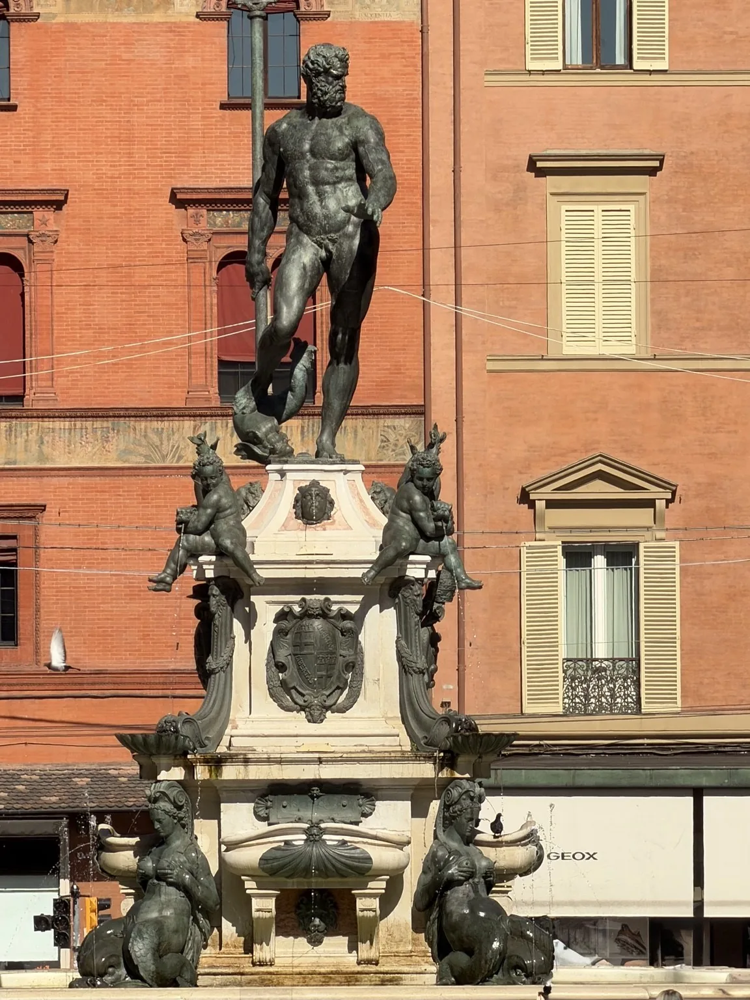
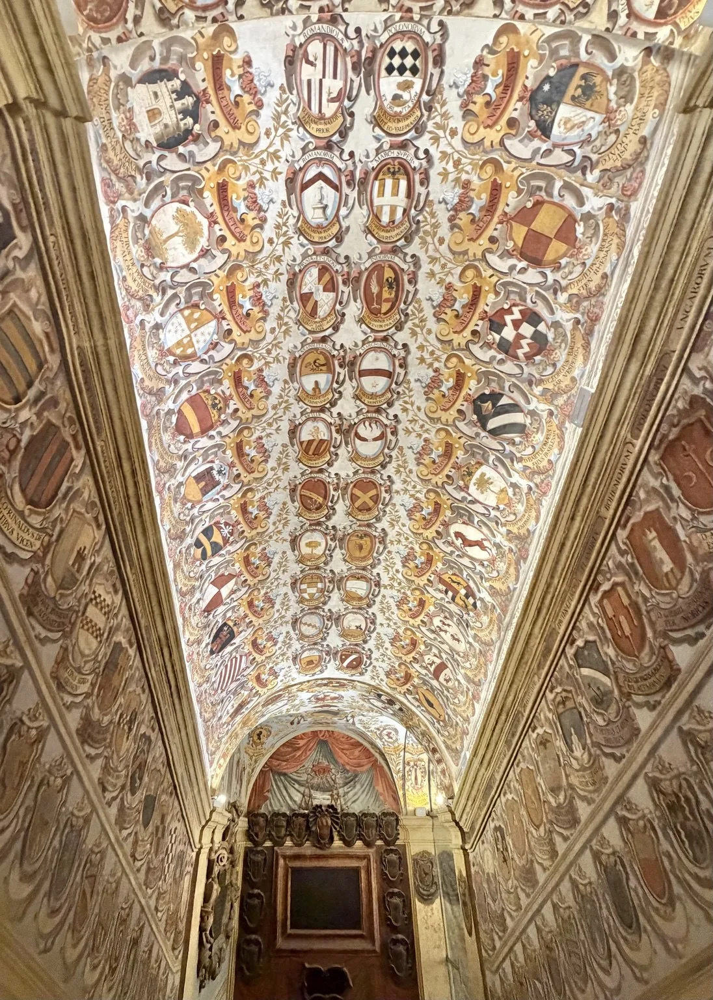
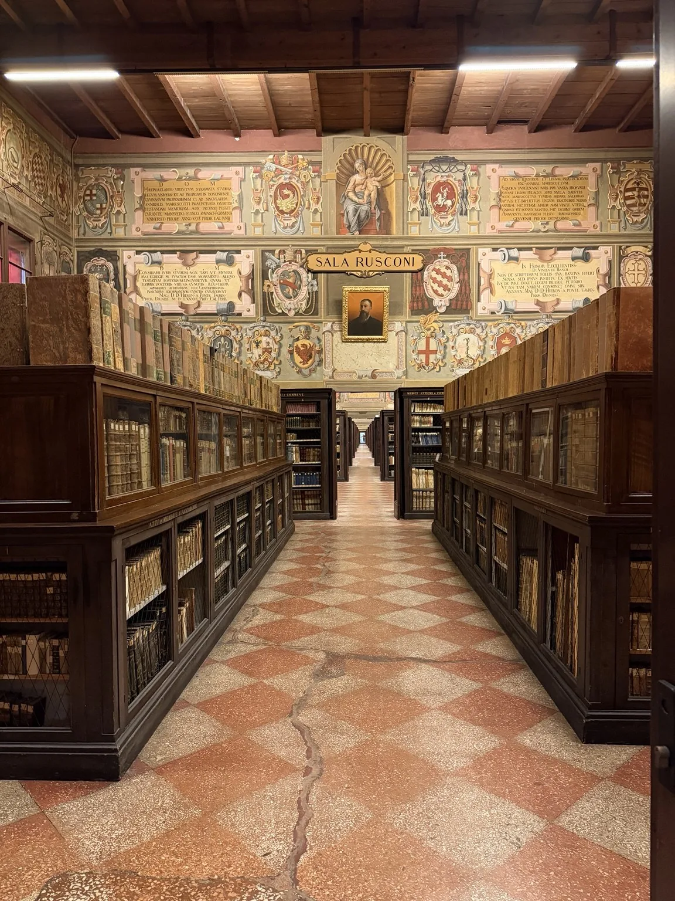
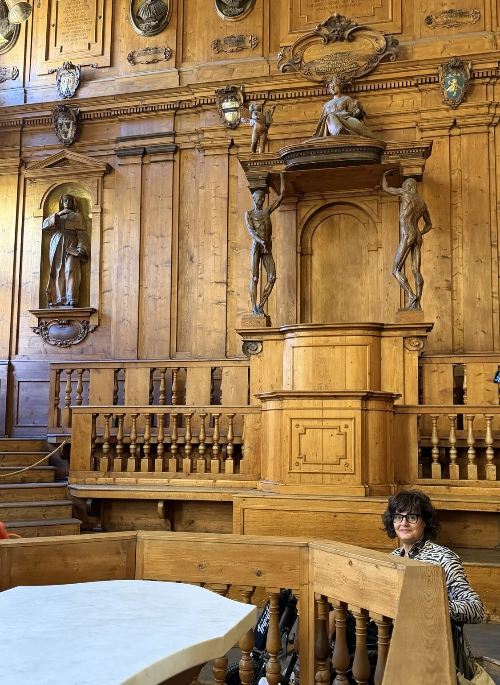
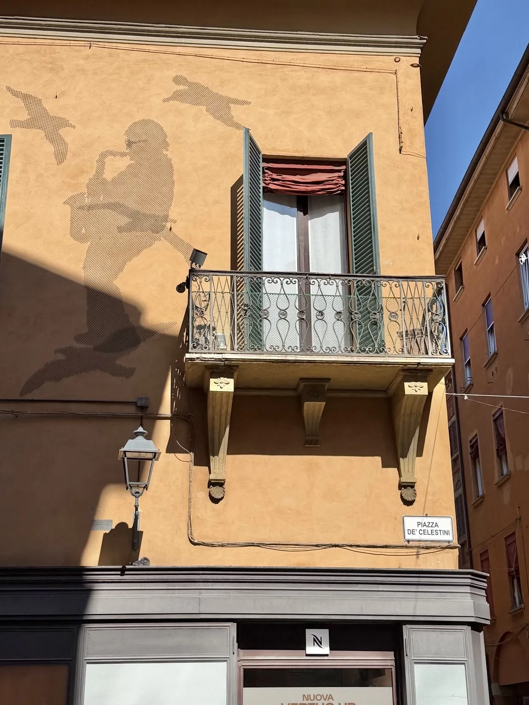
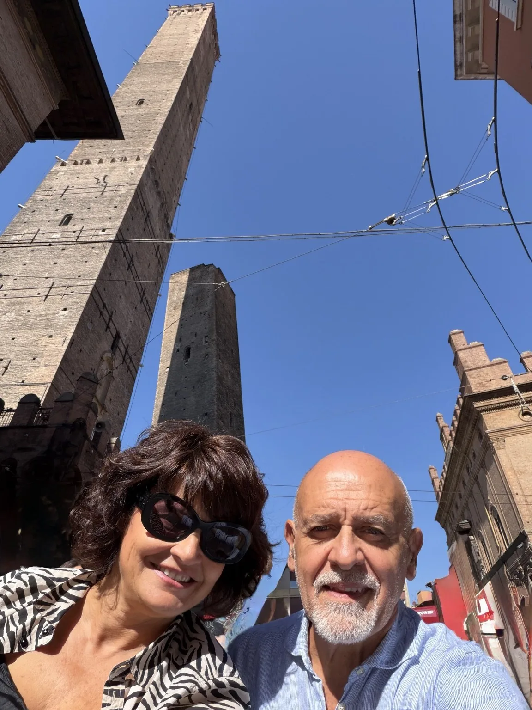
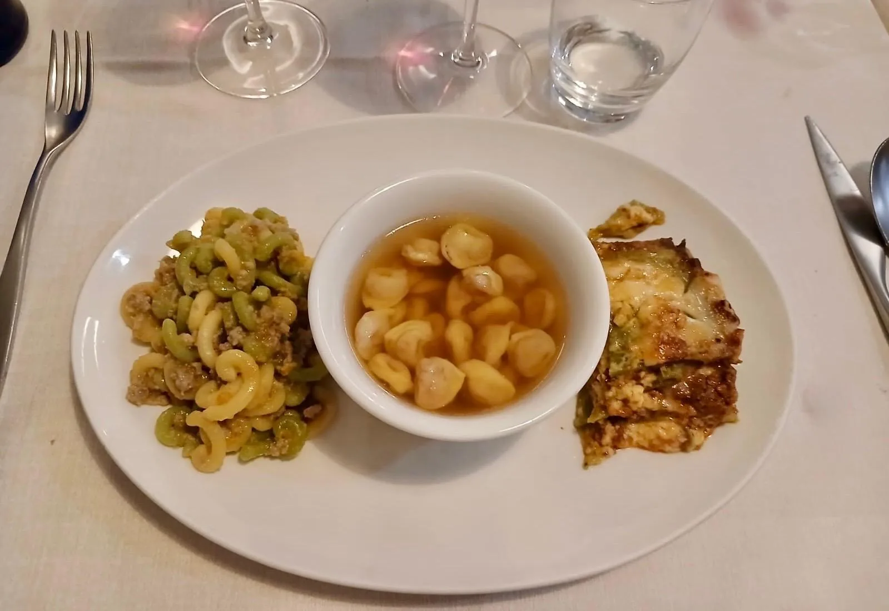
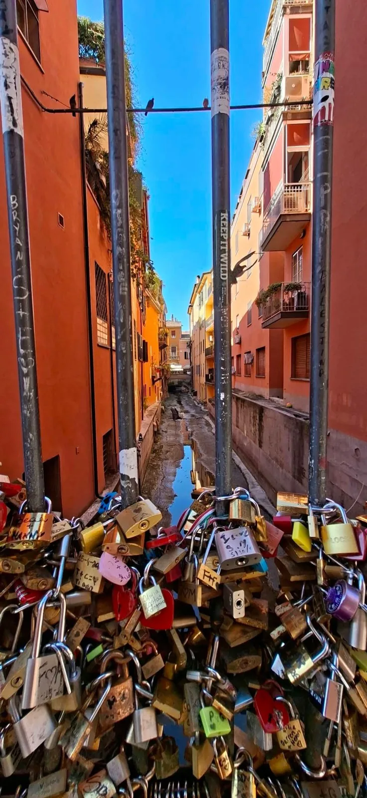
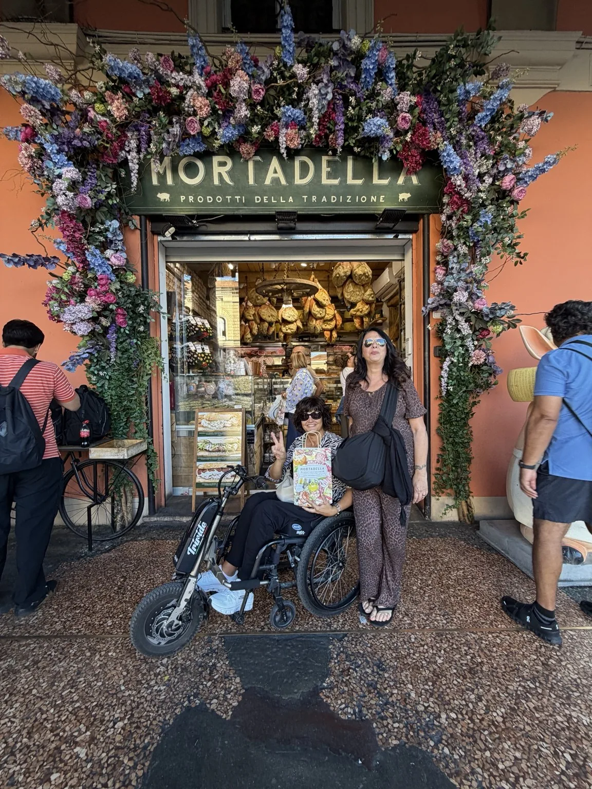

Bologna mi ha conquistata ancora una volta. Abbiamo trascorso una giornata con un unico appuntamento fissato in anticipo e tanto tempo per passeggiare insieme. E, soprattutto, ho trovato una città molto più accessibile e semplice da vivere in carrozzina di quanto potessi immaginare.
Dove abbiamo parcheggiato
Accessibilità · Parcheggio
Abbiamo lasciato l’auto al parcheggio di Via della Grada, dove sono presenti posti riservati alle persone con disabilità.
Una soluzione con cui mi sono trovata molto bene: siamo arrivati senza dover entrare nella ZTL e il parcheggio è comunque abbastanza vicino al centro.
Da lì abbiamo iniziato il nostro giro: io con la carrozzina e il Triride, muovendomi comodamente per tutta la giornata.
Piazza Maggiore: un abbraccio di storia
La nostra prima tappa è stata Piazza Maggiore, il cuore di Bologna. Ci siamo concessi il tempo di ammirarla, guardarci intorno e fare fotografie: qui ogni lato della piazza racconta un pezzo della storia cittadina.
La Basilica di San Petronio, dedicata al patrono di Bologna, domina la piazza. La sua facciata incompiuta, in marmo nella parte inferiore e in mattoni in quella superiore, la rende subito riconoscibile.
Accanto sorge il Palazzo dei Notai, antica sede della corporazione: un edificio medievale dalle belle finestre e dalla sommità merlata.
Sul lato occidentale si affaccia Palazzo d’Accursio, lo storico Palazzo Comunale, riconoscibile per la Torre dell’Orologio.
Di fronte alla basilica, il Palazzo del Podestà ricorda la vita pubblica della Bologna medievale. Sopra il portico si alza la Torre dell’Arengo, la cui campana richiamava il popolo.
Il Palazzo dei Banchi completa il lato orientale con la sua elegante facciata rinascimentale e il lungo portico, dando armonia alla piazza.
Alle spalle del Palazzo del Podestà si trova Palazzo Re Enzo, che prende il nome dal figlio di Federico II, tenuto qui prigioniero dopo la battaglia di Fossalta.
La Fontana del Nettuno
Nella vicina Piazza del Nettuno abbiamo ammirato la celebre fontana, realizzata nel Cinquecento da Giambologna su progetto di Tommaso Laureti. La grande figura in bronzo con il tridente domina la vasca, circondata da putti che rappresentano i grandi fiumi dei continenti allora conosciuti. Una sosta immancabile per una fotografia.

La cosa che mi ha colpito subito è stata l’atmosfera del centro: gli ampi spazi pedonali e gli immancabili portici bolognesi hanno reso la nostra passeggiata particolarmente piacevole.
Palazzo dell’Archiginnasio e Teatro Anatomico
L’unico appuntamento che avevamo prenotato era la visita guidata al Palazzo dell’Archiginnasio e al Teatro Anatomico.
Accessibilità
La mia esperienza di accesso
Per entrare in carrozzina abbiamo utilizzato l’accesso di Via de’ Foscherari n. 2, anziché l’ingresso principale.
Qui si trova un campanello: abbiamo suonato ed è arrivato un addetto che mi ha accompagnata attraverso il percorso accessibile.
Nel mio caso sono stata portata direttamente al piano indicato come secondo, dove ho atteso l’arrivo del gruppo mentre gli altri visitatori effettuavano la prima parte del percorso.
Sullo stesso piano ho trovato anche un bagno accessibile, un’informazione che per me è sempre importante conoscere.
In occasione della nostra visita, il biglietto per me e per il mio accompagnatore era gratuito.
La visita: una Bologna da scoprire
La visita guidata mi è piaciuta davvero tantissimo: interessante e particolare.
Abbiamo scoperto la storia dell’Archiginnasio, uno dei luoghi simbolo della tradizione universitaria bolognese, e visitato l’Aula Magna, uno degli ambienti più affascinanti del palazzo.


Il Teatro Anatomico
Il momento più suggestivo, per me, è stato il Teatro Anatomico, la sala seicentesca destinata alle lezioni di anatomia.
Le statue, il tavolo centrale dove venivano effettuate le dissezioni e la disposizione della sala permettono di immaginare gli studenti riuniti ad assistere alle lezioni. Un ambiente davvero particolare, che mi è rimasto impresso.

Una visita che consiglio assolutamente.
Lucio Dalla, Due Torri e Mercanzia
Terminata la visita, abbiamo continuato a girare tranquillamente per il centro.
Abbiamo percorso Via d’Azeglio, dove si trova anche la casa di Lucio Dalla, fermandoci a osservare i richiami al cantautore e la sua famosa sagoma.
Poi abbiamo proseguito verso Piazza della Mercanzia, uno degli angoli più caratteristici di Bologna, e fatto una sosta per ammirare e fotografare le Due Torri, simbolo della città: la Torre degli Asinelli e la Torre Garisenda.
La Garisenda, più bassa e inclinata, crea un contrasto suggestivo con la slanciata Asinelli. Le abbiamo ammirate dall’esterno, godendoci questo scorcio così riconoscibile di Bologna.


Da lì abbiamo continuato a perderci piacevolmente tra le vie del centro, i portici e le zone pedonali.
I T-Days
Bologna mi è sembrata davvero bellissima e piacevole da vivere in carrozzina. Durante la nostra giornata abbiamo approfittato dei T-Days, con le strade della “T” centrale riservate alla circolazione pedonale.
Per me è stato un grande vantaggio: mi sono mossa molto bene con il Triride e abbiamo potuto passeggiare insieme nel cuore della città con maggiore tranquillità.
Pranzo alla Trattoria Nonna Gigia
A pranzo abbiamo scelto la Trattoria Nonna Gigia.
In questo caso abbiamo deciso di assaggiare più piatti, per provare diverse specialità della cucina bolognese. Abbiamo ordinato il Tris Bologna, con:
- Tortellini in brodo
- Gramigna alla salsiccia
- Lasagne verdi al ragù bolognese

Un vero assaggio della cucina tradizionale bolognese.
Abbiamo aggiunto anche un tagliere con mortadella e tigelle, servite calde.
Accessibilità · Bagno
Un’informazione utile
Nel ristorante ho trovato un bagno accessibile: una cosa da segnalare per chi viaggia in carrozzina.
La Finestrella e lo shopping bolognese
Dopo pranzo siamo andati alla Finestrella di Via Piella, uno degli scorci più curiosi e fotografati di Bologna.
Da questa piccola apertura nel muro si può osservare il canale delle Moline, che scorre tra le case e regala alla zona quell’atmosfera da “Piccola Venezia”.

Naturalmente non potevano mancare le fotografie!
Da sapere prima di andare
Dalla carrozzina, però, la finestrella mi è risultata piuttosto alta e la visuale meno comoda. Abbiamo cercato il punto migliore per permettermi di godere dello scorcio: un piccolo dettaglio utile da sapere prima di arrivare.
Shopping bolognese
Dopo la Finestrella abbiamo continuato a passeggiare senza fretta per le vie del centro. E naturalmente non poteva mancare un po’ di shopping gastronomico: mortadella, tortellini artigianali e prodotti tipici bolognesi.

Perché una giornata a Bologna senza tornare con qualche specialità gastronomica… non sarebbe una vera giornata a Bologna!
Il mio «senza sorprese»
Le informazioni da ricordare, raccolte qui per ritrovarle facilmente.
| Voce | Voto | Da sapere prima |
|---|---|---|
| Parcheggio | 5 su 5 | In Via della Grada abbiamo trovato posti riservati alle persone con disabilità, abbastanza vicini al centro e raggiungibili senza entrare nella ZTL. |
| Centro e percorso pedonale | 5 su 5 | Lungo il nostro itinerario mi sono mossa bene con il Triride. Le aree pedonali e le strade della “T” chiuse al traffico hanno reso la passeggiata più tranquilla. |
| Archiginnasio e Teatro Anatomico | 5 su 5 | All’Archiginnasio ho trovato un bagno accessibile. In occasione della nostra visita il biglietto per me e per il mio accompagnatore era gratuito. |
| Accessibilità della visita | 5 su 5 | Per l’accesso in carrozzina abbiamo utilizzato l’ingresso di Via de’ Foscherari n. 2, suonando il campanello e aspettando l’addetto. Ho seguito un percorso dedicato e atteso il gruppo al piano della visita. |
| Accessibilità Trattoria Nonna Gigia | 5 su 5 | Nel ristorante ho trovato un bagno accessibile. |
| Tris bolognese | 4 su 5 | Tortellini in brodo, gramigna alla salsiccia e lasagne verdi. |
L’apertura è piuttosto alta e dalla carrozzina la visuale mi è risultata meno comoda; conviene cercare il punto migliore per osservare il canale.
I bagni accessibili incontrati
- Palazzo dell’Archiginnasio Bagno accessibile sullo stesso piano della visita.
- Trattoria Nonna Gigia Bagno accessibile nel ristorante.
Esperienza complessiva
5 cuori su 5Questo racconto descrive la nostra esperienza con carrozzina e Triride di sabato 3 ottobre 2026. Servizi, accessi e condizioni di sosta possono cambiare: per organizzare la visita controlla le informazioni aggiornate dei luoghi interessati.